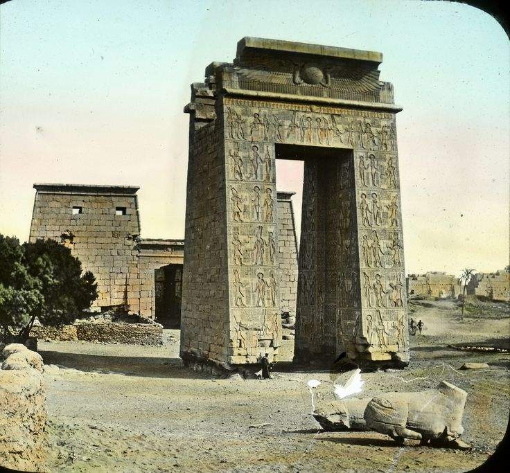
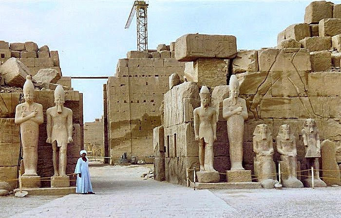
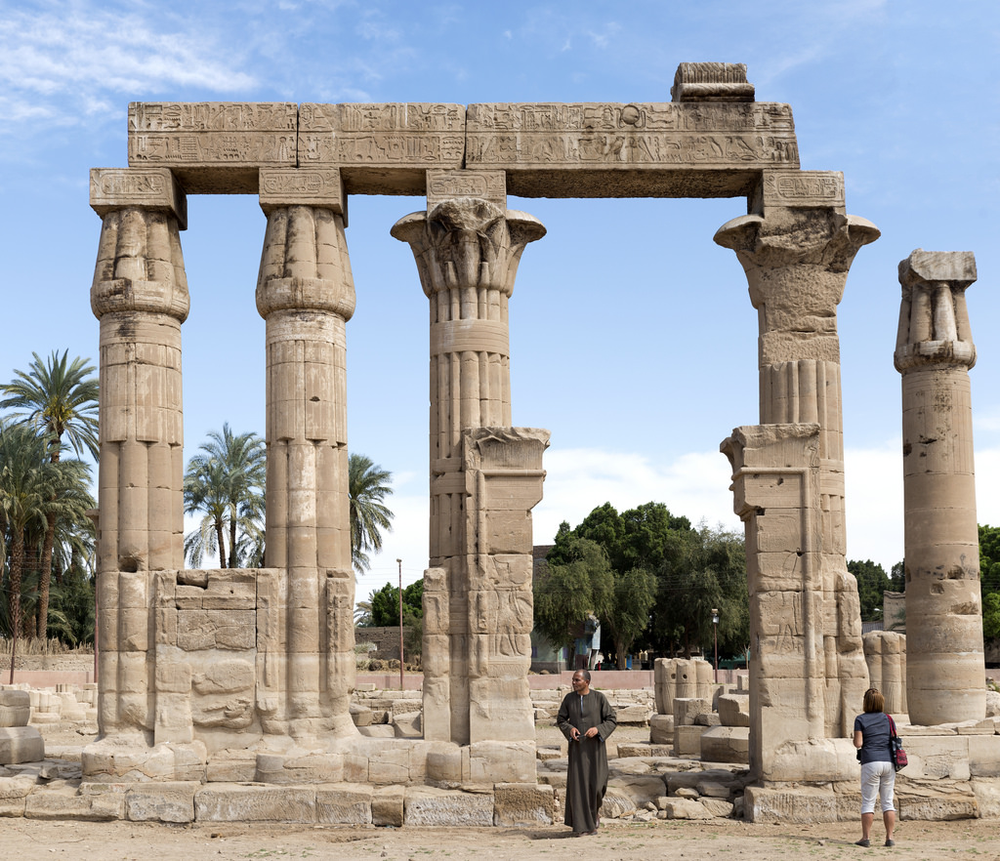
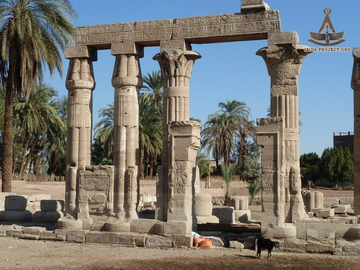

Karnak Precinct of Montu

"Ancient Egyptian Architecture"
Karnak Precinct of Montu is a Precinct that is housed with the Temple of Harpe, the Temple of Maat, and a few other smaller temples. A precinct is t he area within the walls or perceived boundaries of a particular building or place. The Precinct of Montu site is located 5 kilometres (3.1 mi) northeast of Karnak, and it is located within the city of Luxor in. The Temple is located on the east bank of the Thebes.The Temple of Montu is one of the most important sites related to Karnak. Karnak is a colossal open-air museum now, and it is said to be the second largest ancient religious site in the world, after the Angkor Wat Temple of Cambodia. The temple of Karnak is a special monument and has characteristics that are different than most temples. It is different, because it was made up of around thirty pharaohs. The temple was originally meant to be a tribute dedicated for the worshiping of Monthu . The Montu was known to be a falcon headed god of war and was the patron god of Thebes. The Temple of Montu had more of a traditional scheme of Ancient Egyptian architecture. It was full of pillars and court rooms that were filled with rows and rows of columns. The ruins of the Temple of Montu date back to the reign of Amenhotep III who ended up rebuilding the temple and decided it should also be dedicated to Ramesses, so at one point it was renamed Montu-Re. This temple also was said to have a more traditional courtroom than the rest of the temples did. The ruins of the temple date to the reign of Amenhotep III who rebuilt the sanctuary dating from the Middle Kingdom era and dedicated it to Montu-Re. There are a few different temples that are dedicated to Montu including another one nearby in Medamud .T he construction of the temples started in the early Middle Kingdom, and pharoes continued to add buildings, statues and temples up throughout the New Kingdom. The continuous construction of the temple is because every time a new pharaoh took over the throne they added their own trophies, statues or other goods that are a contribution to their wants, needs and desires. Over time the temple just continued to grow and eventually became a large group of combined temples. The temple is really broken down into four main areas, the Precinct of Amun-Re, the Precinct of Montu, the Precinct of Mut, and the Temple of Amenhotep.The Precinct of Montu is the smallest of the four and is most known for it’s gateway that was originally built by Ptolemy III and Ptolemy IV. Leading up to the gate there are rows of prodigious sphinx statues as well as a wharf where ships would load and unload resources and exchange goods. The temple started as a modest temple but as new pharaohs took throne heavy changes continued to be made. The temple was their way to show their wealth, power and their increase in richness. It did not take long until Karnak became one of the most important temples in all of Egypt.
There have been many interesting stories that have happened throughout the time that the temple had been constructed. Pharaoh's never seemed to have the throne for very
long and this may often be due to a pharaoh that may have not been fit for the responsibility or had failed miserably during their time as the leader. “Dynastic dramas played out within Karnakʼs halls, as a kingʼs imagery in the cultic space was seen as directly linked to his memory and legitimacy. Rulers who had fallen from grace could literally be “excised” from history, and the erasures and modifications tell the story of those who rose and fell spectacularly from power.” (Dunn 2016.) There have been findings of relief scenes that have been erased of the queen of the eighth pylon, and complete destruction of all her reliefs in all the rooms that she had constructed. Every image of her face was dismantled and destroyed, and evidences of all this destruction is still there today. Historians have interpreted these destructions as a possible attempt at revenge from Thutmose III against his aunt (the queen of the eighth pylon) that he hated due to her taking the throne right from under him. King Amun, who eventually took over for King Montu also had his name and figure removed from all temples throughout Egypt, including his most important center of Karnak. Something I found fascinating about Karnak, is that there stands statues of Amenhotep IV and the queen, but unlike the traditional statues of kings, queens and their families this statue was unique. The traditional statues of the kings were sculpted with an athletic and idealized body, but this king wanted his statues portray the real resemblance of his frame. So lined up in the front of the courtyard stood a large statue with the king having a “protruding belly, and elongated face, a narrow, high waist, and a thick, lush mouth.” “Relief scenes from this and other Karnak structures showed a bizarre new aesthetic as well, with elongated and exaggerated bodies and faces of all the royal family members.” (Dunn 2016. )

"Temple of Montu Pillars"
In 1940 the French Archaeological Institute in Cairo (IFAO) began excavations and studies in the Temple of Montu and are still going on today. One of the only structures that are still standing at the Temple of Montu today is a 18.75 meter high and 10.96 meter wide gate. On the other side of this gate, one would find a large courtyard which has been decorated by a colonnade dating back from the 25th dynasty during the Kushite period. Excavations believe that the gate is very similar to the architecture at the temple of Khonsu . After further research excavators found an interesting discovery, determining that the gate is divided into four registers, which is a number that is sacred to the Temple of Montu . Excavators have found many other artifacts such as a carving in a slate of the king, wearing a white crown and, offering vessels of wine to Montu . The eastern part of the temple collapsed at the end of the New Kingdom, and was reconstructed by Taharqa (pharaoh of Ancient Egypt, son of Piye , the Nubian king of Napata who had first conquered Egypt) . Taharka built a portico structured wall, which was arched and wasn’t really considered true a gate. So after a while the gate was dismantled by the Ptolemies, who rebuilt the gate of the temple with a proper enclosure of the wall. Karnack temples hold a lot of unique evidence that help improve the world drastically.

"Famous Standing Gate Of Montu"
Finding these ancient ruins is extremely important to archaeology and for
understanding as well as learning the importance about prehistoric times and what took place. There were no written records to read or study back in ancient times, what we have is what was left behind from these Ancient civilizations. This helps us understand Ancient Egyptians history on culture and shows us the way that they lived and the goals that they wanted to accomplish. It also gives us a better understanding on how the human race has changed and evolved throughout time. It wasn't until the 19th century that we really began using archaeology to accurately learn about the history of our past civilization. This is exciting because we are continuously learning more about our history and our technology is continuing to increase and soon enough we may have a clear understanding on a vast majority of ancient civilization. The more evidence that is found the more thought and reconstruction takes place regarding political, religious and our military history. The more we attempt to understand the changes that have taken place in sites such as the Temple of Montu over time, the more we will understand what life really consisted of in the past. It will also help our country substantially grow together as a whole. The research on the temple of Montu relates to our class in multiple ways. It helped me gain a greater understanding about the importance of research and how understanding the past can affect our country's future. Each bit of evidence that is found tells a story, and as time goes on we are beginning to grasp a greater understanding of these undocumented lives. What I found most important regarding the Temple of Montu in Karnak is that every culture and civilization is different. There were no identical dynasties from the first to the last, while some had many similarities, every civilization differed in some way. This idea shows that roles and identities change over time and that is the same as it is today. There is no one way of doing something, and every Pharaoh or King from Ancient Egypt wanted it their way and it wasn’t sustainable, and that is how society still works today. We still have the needs and desires like we did in ancient times, things are more structured today, but we are still the same human beings trying to excel at life and provide.

"Temple of Montu Pillars"
https://egyptsites.wordpress.com/2009/02/03/karnak-temple/
(FIND DIFFERENT SOURCES) Dunn, Jimmy. "Tour Egypt :: The Temple of Montu at Karnak in Egypt." The Temple of Montu at Karnak in Egypt. Accessed November 07, 2016. http://www.touregypt.net/featurestories/montukarnak.htm .
Durbin. "Karnak, Akhenaten Temples To Karnak, Precinct of Montu (Archaeology of Ancient Egypt)." Whatwhenhow RSS. Accessed November 07, 2016. http://what-when-how.com/archaeology-of-ancient-egypt/karnak-akhenaten-temples-to- karnak-precinct-of-montu-archaeology-of-ancient-egypt/.
Sullivan. "Introduction to the Temple of Karnak." Digitial Karnak, 2008. http://dlib.etc.ucla.edu/projects/Karnak/assets/media/resources/IntroductionToTheTempl eOfKarnak/guide.pdf